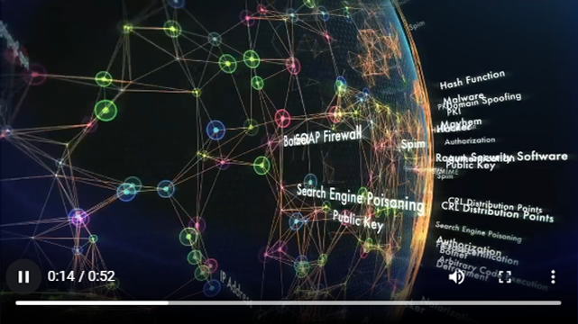
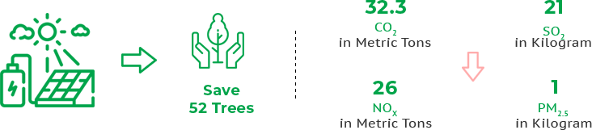

Powering Agriculture
Transforming Agriculture with Clean Energy
Why energy access and resilience, a necessity for the Agriculture sector?
Globally, the food demand is growing in many countries due to population growth and the transformation of rising middle classes into higher protein diets. Millions of farmers and agribusinesses lack access to renewable energy for increases agricultural productivity and value. Energy inputs play a critical role in meeting global food demand and rising the performance of Agricultural food systems, both on the farm and beyond.
Agriculture Problem – Energy Access & Resilience
70%
Global Demand for Food by 2050
80%
Smallholders Food Production
180,000
People Migration from Rural to Urban
Lack of power in Agriculture leads to
Global Challenges to achieve food security & productivity
Life threating of chronic food shortage
Insufficient food consumption leads to malnutrition
Negative impact on human health and economic growth
Enhance climatic changes affect agriculture
Augment Live hood precarious globally
Our Solution- Powering Agriculture, A GREEN Augmentation
Harnesses the Power of Solar Energy for Sustainable Agriculture
GREEN Limited, providing Holistic approaches of Powering Agriculture with Renewable Energy will help farmers to increase Agricultural productivity as well as to increase Return of Investment, lead to high operational efficiencies, low environmental impact and low production
Empowers Agricultural sectors on progress towards zero hunger and end poverty
Meeting agriculture’s need for clean energy to feed the developing world
With adoption of GREEN Solar energy, the Agriculture sector reinvent to Sustainable Agriculture.
Empowers Agriculture sectors to improve food processing, storage and preservation, ensures nutritional value, food safety, improves the availability of healthy foods. Promotes good health and well beings of population and an effective agriculture operations with solar powerd agricultural equipment for farming, solar powerd cocoa dryers, cold storage systems and solar electric fencing
Augment food production to meet
global demand
Enhance the quality of healthy
lives of population
Strengthen ecosystem resilience
Protect and enhance natural resources
Improve live hoods and foster
inclusive economic growth
Enhance the resilience of people,
communities and ecosystems
Adapt governance to new challenges
GREEN Powering Agriculture – The Positive Impact
Quality Agriculture yield
Sustainable Agriculture improves productivity and transforms the livelihoods of hundreds and millions of people globally.
Encourage diversifications of production & Income
Increase the diversity of productive activities during different periods and enhance revenue capabilities
Health Benefits
Prevention of malnutrition, contamination related diseases and ensures a greater potential towards tow rds healthy living.
Address & Adapt to Climate Change
Builds resilience to climate changes and significantly contributes to sustainable development.
Powering Agriculture Applications- GREEN’s Precision Bestowed
Solar Powered Cocoa Dryer
GREEN Solar Powered Cocoa Dryer is a specialized Cocoa Drying mechanism designed, developed and manufactured to process the Cocoa beans processed in the form of dried beans using a combination of Solar Thermal and Solar Photovoltaic technology engineered for optimal temperature and humidity for quality bean processing.
Solar Powered Coffee Pulping Machine
100% Solar powered direct drive operation, it’s a portable design with inbuilt energy efficient BLDC motor with optional hand operation mode. It ensures zero pollution and low maintenance.
Powering Agriculture with Solar Energy Benefits
Cost Savings
On large farms, Solar energy harnessed result in lower cost than fossil fuels. It cuts down the electricity bills, ensures a cost effective. Solar energy can avoid the grueling costs. Also Solar energy frees farmers from electricity spikes or times when electricity is all consumed at once.
An effective solution to Drought Related Problem
Farmers worry about drought and the power cuts that occur with it every year. Solar energy is a feasible route to take in this prolonged drought, as it demands limited water supply and allows for better yields.
Soil becomes better Habitat
Powering Agriculture with Solar energy enables eco-friendly environment. Solar panels do not harm or threaten plants. Also, it can be easily maintained through hedging.
Most effective way to halt Global Warming
With Farmers adopting Solar energy for their Agriculture land, it will become easier to fight against the dangerous effect of Global Warming.
Storing Solar Energy for later use
An Agricultural land has always lived under the fear of interrupted power failures, using Solar Energy can prove beneficial for many. With new advances, it becomes easy to store Solar energy for later use. Farmers can store using batteries during peak hours and use it later.
Environmental Protection
Sustainable Agriculture promotes environmental security, preventserosion and depletion of natural resource, improves air and water quality, increases biodiversity and decreases carbon emissions.
Health Improvement
Improves safer and healthier food production for consumers and surrounding communities.
Economic and Social Equity
Ensure decent income, job creation, provides food, goods and services for the growing demand of population growth. It enables rural territories to be strengthen and create social relations between the rural and urban world.
Powering Agriculture
GREEN Contribution to SDGs – Powering Agriculture
SDG 1 - End poverty in all its forms everywhere
SDG 2 - Zero hunger & promote sustainable agriculture
Food and Agriculture are the at the heart of civilization and prosperity. But Agriculture faces multiple challenges: a world population expected to grow 9 billion by 2050, feeding the world is one of the main issues that should be addressed. The Challenges are interconnected with Hunger & Malnutrition, Water Access, Climate change and all these impacts upon us all. GREEN Powering Agriculture holistic approach will directly contribute to the achievement of the UN Sustainable Development Goals such as SDG 1 - No Poverty, SDG 2 - Zero Hunger, SDG -8 Decent work and Economic growth and SDG 13 - Climate Action.
Powering Agriculture solutions ensures a Sustainable Food and Agricultural system with uninterrupted energy access.
Environmental Benefits
With prevailing Agricultural load powered by diesel generators would cause huge amount of environmental pollution such as greenhouse gases.
With our GREEN's Solar Renewable Energy based Powering Agriculture Solution can cater for Agriculture Facilities from an average consumption of 1 kilowatt electric power and overall consumption of 45625 kilowatts per hour in 25 years of life time. This can cut down the emission of Carbon dioxide estimated to 32.3 Metric Tons, emission of Sulphur dioxide estimated to 21 kilograms, emission of Nitrous oxide estimated to 26 kgs, emission of particulate estimated to 1 kg and thus Saving 52 Trees.
Benefits are directly proportional based on the size of the agriculture facility that requires more than 1 kilowatts of electric power so would be the environmental benefits reducing greenhouse gases.
